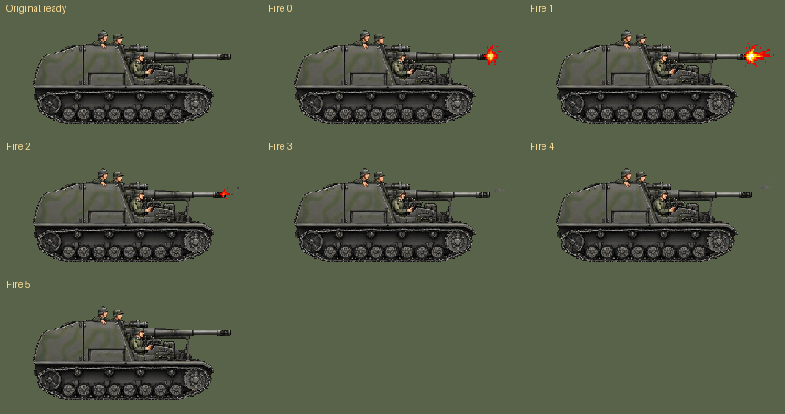

Izvorni trup, gusenice, tri člana posade i oslonac ostaju isti. Pomiče se izloženi deo cevi; postojeći plamen prelazi u dim i nestaje.

GIF sa pauzom na kraju · Metapodaci i poreklo
Isti atlas koriste Kluz i katalog. Hummel ima ručno opaljenje sa projektilom i zvukom; postojeće ponašanje neprijatelja u misijama je sačuvano.